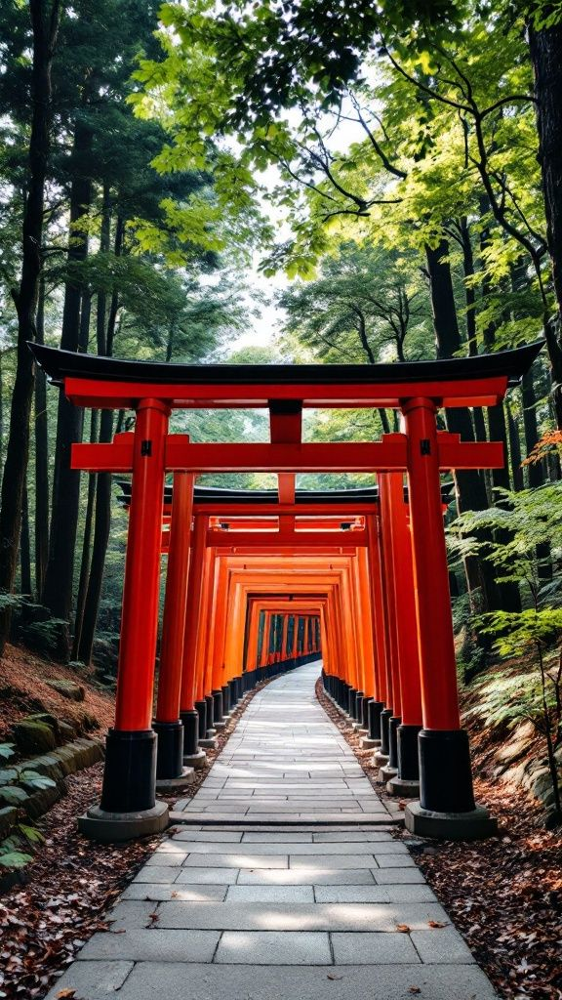
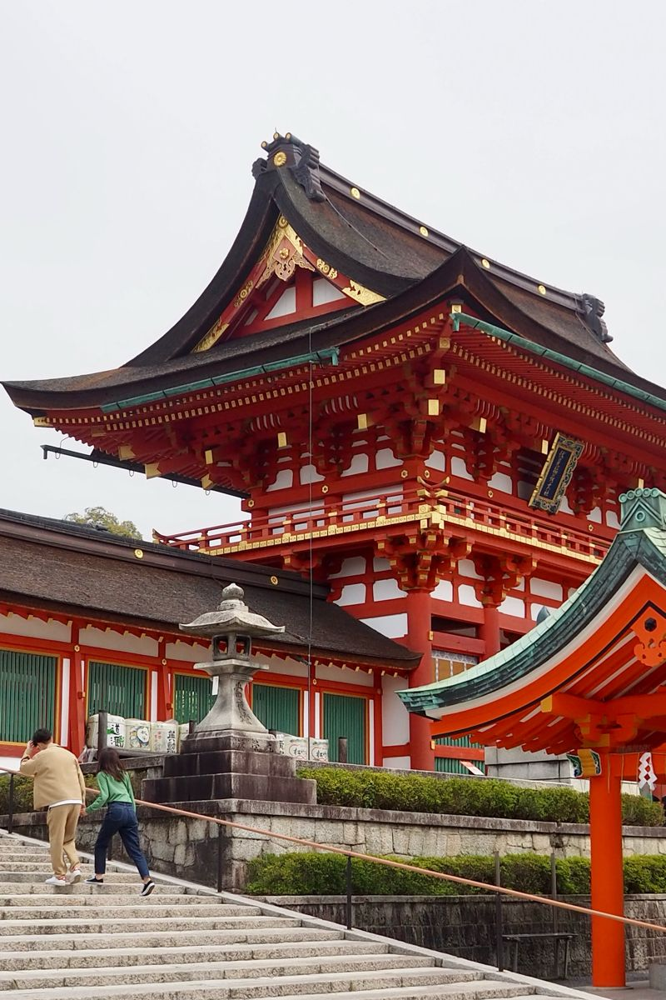
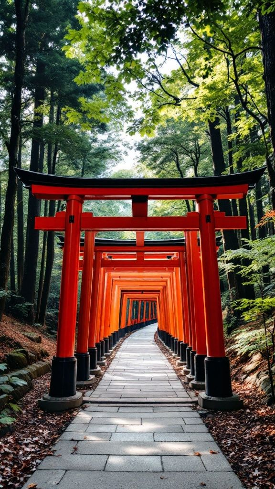
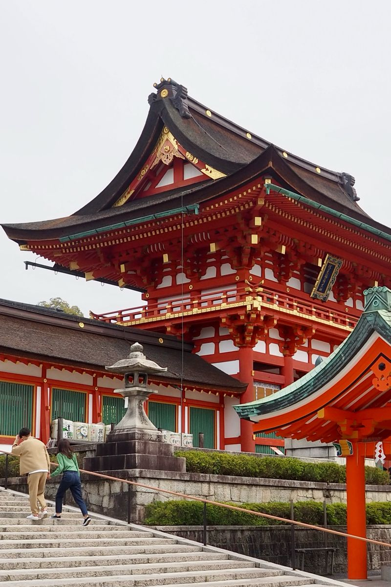

← Back to Home
← Back to Home
Fushimi Inari Shrine, Kyoto
|
Fushimi Inari Shrine is known worldwide for its thousands of bright red Torii gates that form mystical pathways up the sacred mountain. Dedicated to the Shinto god Inari, it offers a peaceful and spiritual atmosphere. Walking through the gate tunnels, surrounded by forests and scenic viewpoints, is one of Japan’s most unforgettable experiences. |
 


